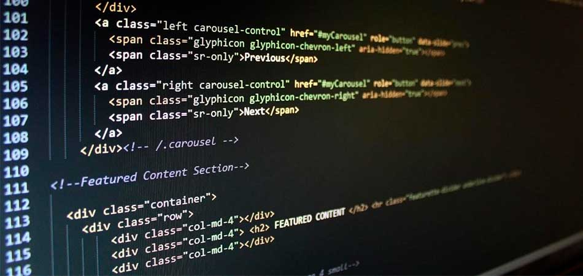

Всё про «легкий вход в айти»
Все хотят в ИТ. ИТ - это новая «нефтянка» - область с перспективами роста зарплаты, карьерного развития и стабильно высоким спросом на новые кадры.
Тестирование считается одной из самых оптимальных точек входа в информационные технологии.
На это есть несколько причин:
- Тестирование не требует глубоких технических знаний
- Методологиям и техникам тестирования можно научиться за несколько месяцев
- Работодатели реально готовы брать людей без опыта на стажерские позиции тестировщика с дальнейшим ростом
В месяц на hh.ru появляется около 5 тысяч новых вакансий по запросу «Тестировщик ПО». Правда ли через тестирование легче всего зайти в ИТ, какие перспективы развития у тестировщика и, наконец, где учиться тестированию ПО - на эти вопросы мы попытаемся ответить.
Что такое, кто такой?
Тестировщик или QA-инженер (quality assurance) - это человек, который занимается тестированием продукта - сайта, приложения, игры, программы. Это может быть внутренний продукт, который создала команда, частью которой является сам тестировщик, а может быть внешний - когда, например, тестировщик работает на фрилансе или со стороны заказчика продукта.
Главная задача тестировщика - это найти ошибки («баги») в продукте и отправить отчет о них (баг-репорт) разработчикам. Поэтому тестировщики нужны не только в сфере разработки ПО, а во всех проектах, которые занимаются разработкой ИТ-продуктов, приложений и устройств.
Тестирование может быть ручным и автоматизированным. Ручное тестирование подразумевает, что тестировщик сам «вручную», с помощью специальных инструментов тестирует продукт. С развитием системы объем тестов для ее проверки возрастает и тестировщик начинает писать код для автоматизации своих проверок. Код тестировщик пишет сам для своих задач, поэтому в качестве инструмента может использоваться любой удобный ему язык программирования. Чаще всего используются языки Java и Python.
Впрочем, для начинающего тестировщика не обязательно знать какой-либо язык программирования, потому что на начальных позициях тестировщик использует именно ручное тестирование.
Именно поэтому и говорят о «легком входе в ИТ» через тестирование - для того, чтобы начать работать тестировщиком, не обязательно иметь глубокие технические знания.
Но есть и минимум, который должен освоить каждый тестировщик:
- жизненный цикл программного обеспечения;
- ведение тестовой документации;
- составление отчетов об ошибках в багтрекинговых системах;
- основные техники тест-дизайна;
- тестирование веб- и мобильных приложений.
Без этих знаний невозможно заниматься тестированием ПО.
Главные soft skills для тестировщика - способность концентрироваться, внимание к деталям, стрессоустойчивость и небезразличие к конечному результату.
Вопрос денег
Средний уровень зарплаты тестировщика - 93 000 рублей по России.
Зарплата тестировщика зависит от множества факторов. В основном на уровень зарплаты влияют 4 момента:
- Опыт практической работы в тестировании
- Навыки, которыми владеет кандидат
- Город, где находится офис работодателя
- Режим работы: удаленка, фриланс, офис.
Самые высокие зарплаты у тестировщиков, которые обладают опытом работы более 10 лет, работают в Москве (или на работодателя из Москвы) из российских городов, на удаленке или в офисе по гибкому графику.
Остановимся подробней на самых оплачиваемых навыках. Ими стали:
- навык написания кода на Python или Java
- опыт использования одного из популярных framework для автоматизации тестирования Selenium, Ranorex, UFT
- опыт в тестировании мобильных приложений
- опыт разработки скриптов и проведение нагрузочного тестирования
При этом зарплата тестировщика может достигать 350 000 рублей и в редких случаях даже выше. Наиболее высокооплачиваемые грейды - это senior и lead (при этом разница в их зарплатах практически минимальна). Джун с опытом работы менее года может рассчитывать на зарплату с дельтой 45 000 - 75 000 рублей.
Куда дальше?
Многие рассматривают позицию тестировщика как «перевалочный пункт» между другими ветками развития в ИТ.
Кем может стать тестировщик после успешного старта в отрасли?
- Системным аналитиком. Это человек в команде, который анализирует, моделирует и составляет требования к разработке программного продукта. Опыт тестирования будет незаменимым для системного аналитика: он уже будет знать продукт и сможет более детально составить требования по его улучшению. Для развития в системного аналитика тестировщику нужно будет для начала разобраться в правилах сбора требований и разработки технического задания для ИТ-проекта.
- Менеджером продукта/проджект-менеджером. Поскольку у тестировщика уже есть уверенная база по жизненному циклу продукта, он может «добрать» хард и софт-скиллов по управлению жизненным циклом ИТ-продукта и/или ИТ-проекта и вырасти в полноценного продакт- или проджект-менеджера.
- Разработчиком. Многие рассматривают тестирование как переходный этап в карьерном развитии именно на пути в область разработки. Но сразу уйти в программирование не получится - нужны будут знания по основам программирования и базам данных плюс знание хотя бы одного языка программирования.
- Тимлид команды тестировщиков. Вырастая как эксперт в своей сфере, тестировщик может возглавить группу тестирования в проекте. Для этого нужно будет погрузиться в тест-менеджмент и научиться выстраивать эффективную коммуникацию в команде.
Где учиться на тестировщика?
Благодаря высокому спросу, курсов по тестированию очень много и они продолжают появляться. Как не ошибиться с выбором курса?
Разберем, что должно быть в хорошем курсе по тестированию ПО:
База по программированию
Порог входа в профессию тестировщика реально ниже, чем в целом в другие области ИТ-сферы.
Но стоит внимательно отнестись к обещаниям научить тестированию «с нуля»: в программе курса должно быть достаточное количество академических часов для этого. Если курс краткосрочный, заслуживают доверия обучающие программы, где требуются знания по программированию.
Программа
Курсы должны быть выстроены последовательно от простого к сложному. В программы краткосрочных курсов часто стараются включить разбор практических кейсов на самом раннем этапе.
Лучше последовательно разобраться в материале и обеспечить себе уверенный фундамент знаний на будущее.
Выберите курсы, которые можно проходить в удобном режиме - для плавного входа в профессию не нужно проходить их сразу подряд.
Количество часов в неделю
Потратить меньше времени на подготовку может показаться хорошей идеей, но по факту вы не получите полноценную новую профессию, если будете тратить на ее освоение по 4 часа в неделю.
Хорошим вариантом будет выбор курса, где на одно занятие отводится более 6 академических часов: это будет плотная и эффективная работа с материалом.
Образовательная траектория
Удобно, если есть возможность разбить курсы по тестированию на необходимую базу и продвинутые навыки, например, по тест-дизайну или управлению тестированием в команде. Такое разбиение поможет выбрать только нужные темы и не переплачивать за ненужные.
Формат обучения
Широкий выбор курсов позволяет выбрать и удобный формат обучения. Онлайн-формат удобен тем, что можно сэкономить время на дороге и подключаться к занятию из любой точки. Офлайн-формат позволяет более плотно общаться с преподавателем и найти единомышленников среди одногруппников. В этом случае нужно обратить внимание, чтобы очные курсы проходили с соблюдением всех ковидных норм.
Материалы и практика
В хорошем учебном курсе вам должны предоставить весь пул материалов, которые вы будете использовать в работе.
Это книги по тестированию, шаблоны чек-листов, шаблоны баг-репортов, ГОСТы, презентации.
Также в программе курса должен быть большой блок практики - без практического опыта хотя бы в формате учебных проектов в тестировании делать нечего.
Преподаватели
Доверьтесь специалистам с полевым опытом работы тестировщиком за плечами. Узнать о специфике работы тестировщиком вы сможете только от человека с реальным опытом работы, который уже набил себе «шишек» и знает, какие места в работе тестировщика являются наиболее проблемными.
В идеале если на курсе преподают преподаватели-практики - специалисты, чья экспертиза проверена опытом и экспертным сообществом.
Помощь по трудоустройству
Работу можно найти уже в процессе обучения, т.к. знаний будет достаточно, чтобы успешно проходить собеседования.
Поэтому ощутимым плюсом будут курсы тех обучающих центров, которые имеют свой пул работодателей и успешным опыт трудоустройства выпускников.

Подытожим
Тестировщик - это действительно ИТ-профессия с низким порогом входа, так как на первом этапе не требует глубоких технических знаний и знания какого-либо языка программирования. Но рынок труда начинает переполняться людьми без технической базы, поэтому наличие хотя бы базовых знаний по программированию уже будет ощутимым плюсом.
Зарплата тестировщика сильно зависит от опыта работы и навыков, которыми он обладает. На позициях с минимальным опытом работы и базовыми знаниями по тестированию средний уровень зарплат от 45 000 рублей до 75 000 рублей.
Необходимая база для тестировщика - знание жизненного цикла программного обеспечения, навыки ведения тестовой документации, умение составлять отчеты об ошибках в багтрекинговых системах, представление об основных техниках тест-дизайна, навыки тестирования веб- и мобильных приложений.
Тестировщик может дальше развиваться в своей области, а может перейти в смежные - в разработку или управление продуктом или проектом.
Курсов по тестированию сейчас очень много и есть возможность выбрать оптимальные по цене и качеству. Для выбора подходящего курса нужно учесть несколько моментов: достаточное количество академических часов программе и ее интенсивность для погружения в тему с большим количеством времени на практику, опытные преподаватели с опытом в тестировании в качестве наставников и помощь в трудоустройстве.
Работа тестировщика не такая простая, как может показаться со стороны, но именно благодаря тестировщику продукт становится совершенней.
Если вас привлекает такая роль в команде, то стоит ли терять время? Заручитесь упорством и начните свой путь в ИТ прямо сейчас!
Почитать оригинал статьи можно на сайте.